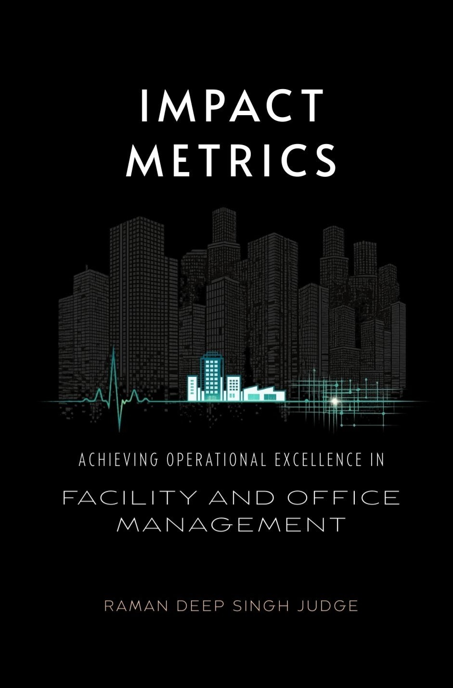

Facilities Management Excellence: Mastering the Built Environment
A structured six-volume curriculum covering every stage of FM leadership — from operational fundamentals to board-level strategic governance. Each volume is self-contained and can be read independently at the career stage it is written for.
The series covers people management, asset lifecycle, maintenance planning, sustainability, technology deployment, global governance, and the future of the profession. India-relevant throughout, globally applicable in scope.


Specialist Works
An operational field manual covering India's four Labour Codes, payroll compliance, talent frameworks, HR analytics (HCRoI, predictive attrition modelling) and AI integration. Fully updated for the new Labour Codes. Includes 30+ ready-to-use templates and calculators.

A governance manual reframing KPIs as instruments of control rather than reporting outputs. Establishes disciplined frameworks for accountability, escalation and predictable operational performance across outsourced and technology-saturated environments.

Thinking on the Industry
Views on facility management, HR operations and workplace practice — written from 26 years of running these functions, not observing them.
The most common reasons facility management engagements underperform — and the structural changes that turn a vendor relationship into an accountable service partnership.
Frontline attrition is rarely tracked with the same rigour as professional attrition — but the cost to operations, compliance and client relationships is just as significant.
The statutory obligations that small and mid-sized organisations most commonly miss — and the consequences that tend to surface only at audit or dispute.
The project management disciplines that separate on-budget, on-time fit-outs from the costly, disruptive norm in corporate interior projects.
Achievable energy reduction strategies for corporate facilities — without significant capital investment. Based on documented outcomes from managed operations.
The gap between what enterprise software offers and what a 50–500 person Indian organisation actually needs — and why that gap represents a significant underserved opportunity.
A 200-person company managing six separate service vendors isn't saving money — it's paying a hidden coordination tax. The structural case for integrated service delivery.
Most organisations misunderstand what interim staffing actually involves. The difference between a properly structured EOR engagement and an informal contractor arrangement — and why it matters.
New offices and early-stage companies make the same operational mistakes in their first quarter. A structured guide to what to put in place, in what order, before the chaos compounds.
Extracts appear on LinkedIn. The full piece is always here.